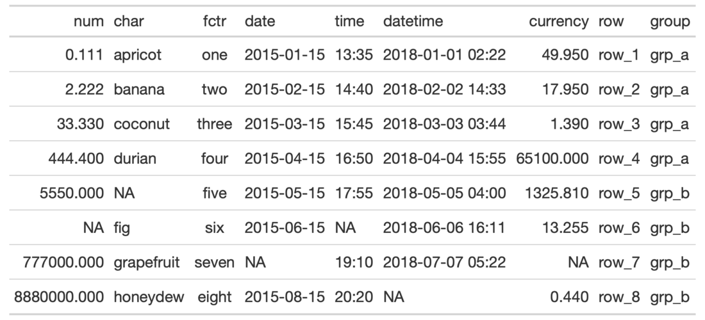
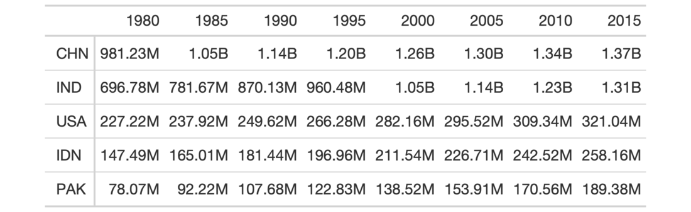

| fmt_number {gt} | R Documentation |
With numeric values in a gt table, we can perform number-based formatting so that the targeted values are rendered with a higher consideration for tabular presentation. Furthermore, there is finer control over numeric formatting with the following options:
decimals: choice of the number of decimal places, option to drop trailing zeros, and a choice of the decimal symbol
digit grouping separators: options to enable/disable digit separators and provide a choice of separator symbol
scaling: we can choose to scale targeted values by a multiplier value
large-number suffixing: larger figures (thousands, millions, etc.) can be autoscaled and decorated with the appropriate suffixes
pattern: option to use a text pattern for decoration of the formatted values
locale-based formatting: providing a locale ID will result in number formatting specific to the chosen locale
fmt_number(
data,
columns,
rows = everything(),
decimals = 2,
n_sigfig = NULL,
drop_trailing_zeros = FALSE,
drop_trailing_dec_mark = TRUE,
use_seps = TRUE,
scale_by = 1,
suffixing = FALSE,
pattern = "{x}",
sep_mark = ",",
dec_mark = ".",
locale = NULL
)
data |
A table object that is created using the |
columns |
The columns to format. Can either be a series of column names
provided in |
rows |
Optional rows to format. Providing either |
decimals |
An option to specify the exact number of decimal places to
use. The default number of decimal places is |
n_sigfig |
A option to format numbers to n significant figures. By
default, this is |
drop_trailing_zeros |
A logical value that allows for removal of trailing zeros (those redundant zeros after the decimal mark). |
drop_trailing_dec_mark |
A logical value that determines whether decimal
marks should always appear even if there are no decimal digits to display
after formatting (e.g, |
use_seps |
An option to use digit group separators. The type of digit
group separator is set by |
scale_by |
A value to scale the input. The default is |
suffixing |
An option to scale and apply suffixes to larger numbers
(e.g., Including Any use of |
pattern |
A formatting pattern that allows for decoration of the
formatted value. The value itself is represented by |
sep_mark |
The mark to use as a separator between groups of digits
(e.g., using |
dec_mark |
The character to use as a decimal mark (e.g., using |
locale |
An optional locale ID that can be used for formatting the value
according the locale's rules. Examples include |
Targeting of values is done through columns and additionally by rows (if
nothing is provided for rows then entire columns are selected). A number of
helper functions exist to make targeting more effective. Conditional
formatting is possible by providing a conditional expression to the rows
argument. See the Arguments section for more information on this.
An object of class gt_tbl.


3-1
Other Format Data:
data_color(),
fmt_currency(),
fmt_datetime(),
fmt_date(),
fmt_markdown(),
fmt_missing(),
fmt_passthrough(),
fmt_percent(),
fmt_scientific(),
fmt_time(),
fmt(),
text_transform()
library(tidyr)
# Use `exibble` to create a gt table;
# format the `num` column as numeric
# with three decimal places and with no
# use of digit separators
tab_1 <-
exibble %>%
gt() %>%
fmt_number(
columns = num,
decimals = 3,
use_seps = FALSE
)
# Use `countrypops` to create a gt
# table; format all numeric columns
# to use large-number suffixing
tab_2 <-
countrypops %>%
dplyr::select(country_code_3, year, population) %>%
dplyr::filter(
country_code_3 %in% c(
"CHN", "IND", "USA", "PAK", "IDN")
) %>%
dplyr::filter(year > 1975 & year %% 5 == 0) %>%
tidyr::spread(year, population) %>%
dplyr::arrange(desc(`2015`)) %>%
gt(rowname_col = "country_code_3") %>%
fmt_number(
columns = 2:9,
decimals = 2,
suffixing = TRUE
)